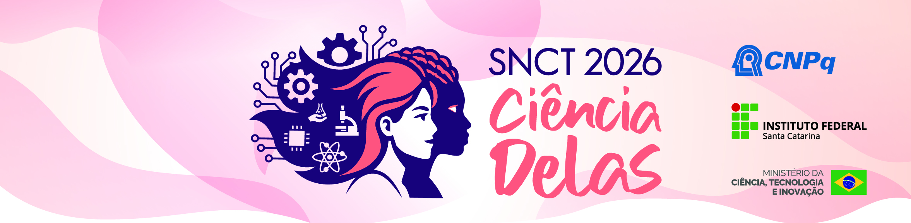

Instituto Federal de Santa Catarina — Câmpus Canoinhas
Semana Nacional de Ciência e Tecnologia 2026

Mostra de Ensino, Pesquisa e Extensão
Apresentação de Trabalhos SNCT 2026
Conheça as produções científicas, inovações tecnológicas e relatos de experiência desenvolvidos pela comunidade acadêmica do IFSC Câmpus Canoinhas sob a temática "Ciência Delas". Clique nos cartões para assistir às apresentações em vídeo.